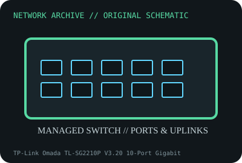

[ MODEL-SPECIFIC NETWORK HARDWARE ]
TP-Link Omada TL-SG2210P V3.20 10-Port Gigabit PoE+ Smart Switch
Eight PoE+ Gigabit access ports plus two SFP uplinks. Confirm exact product label and revision before applying specifications.

IDENTIFICATION: Confirm manufacturer PID, hardware revision, device ID or module suffix. Nominal standards/link rates are not measurements of payload performance.
Exact specifications and compatibility
| Dedicated subcategory | Managed switches |
|---|---|
| Exact product/model | TP-Link Omada TL-SG2210P V3.20 10-Port Gigabit PoE+ Smart Switch |
| Bus, ports and physical interface | Eight 10/100/1000BASE-T PoE+ RJ-45 ports and two 100/1000Mb/s SFP slots; desktop/wall form factor. |
| PHY, radio or protocol | Omada-managed Layer 2+ switch; IEEE 802.3af/at PoE, 802.1Q VLAN, QoS and management features vary by firmware. |
| Nominal rate (not measured) | 20Gb/s nominal switching capacity; 61W PoE budget listed on current V5.3 family page is not safe to apply to V3.20. Use the revision-specific label/data sheet. |
| Measured throughput | No measured benchmark is claimed for a physical specimen. A valid result must record host/peer, link partner, media/cable, driver/firmware, traffic pattern, test tool and duration. |
| Drivers, OS and firmware | TP-Link Omada SDN Controller, standalone web/CLI and revision-specific firmware. Use V3.20 downloads and controller support matrix. |
| Compatibility | Use only the V3.20 power adapter/PoE budget from its manufacturer documentation; compatible SFPs and Omada software are required. |
| Variant warning | TL-SG2210P V3.20 is not later hardware V5.30 or similarly named SG2210P. PoE budget and features differ by revision; do not copy current-version specs. |
Model and revision notes
TL-SG2210P V3.20 is not later hardware V5.30 or similarly named SG2210P. PoE budget and features differ by revision; do not copy current-version specs.
TP-Link Omada SDN Controller, standalone web/CLI and revision-specific firmware. Use V3.20 downloads and controller support matrix.
Use only the V3.20 power adapter/PoE budget from its manufacturer documentation; compatible SFPs and Omada software are required.
Archival, ESD and preservation notes
Record hardware revision, adapter model, firmware, SFP types and PoE budget label; unplug before service and store PSU separately.
Document source URL, access date, document revision and specimen label/condition. Preserve without credentials or private configuration.
Primary manufacturer and standards sources
- TP-Link TL-SG2210P product informationPrimary manufacturer or standards documentation; verify exact SKU and host revision.
- TP-Link TL-SG2210P hardware revision support/downloadsPrimary manufacturer or standards documentation; verify exact SKU and host revision.
- IEEE Ethernet/PoE standardsPrimary manufacturer or standards documentation; verify exact SKU and host revision.
Manufacturer statements cover the named part or its documented product family; the exact labeled revision and vendor compatibility list take precedence.